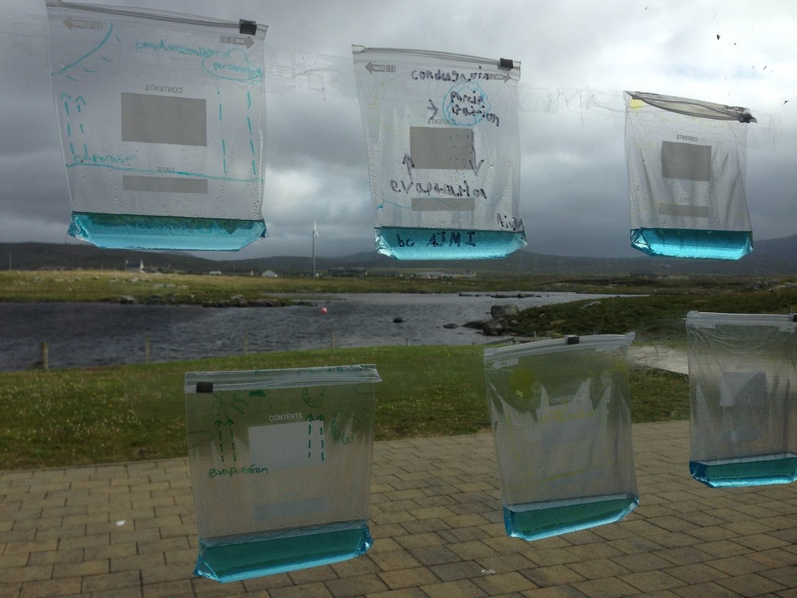

We've been running after school code clubs at Sgoil an Iochdair, Sgoil Dhalabroig, Sgoil Uibhist a Tuath and delivering
classes in coding at Sgoil Bhaile a' Mhanaich and Sgoil Dhalabroig. These activities will continue (and expand) throughout the coming school year.
Coding classes have focussed on learning Scratch to create games, animations and music and introductions to basic Python and Javascript coding.
As of November 2019 Lionacleit Code Club is now running on Thursday lunchtimes supported by Lionacleit Library.
The github repo containing resources for learning python and scratch (among other things) is here.
In December 2019 we worked with pupils at Sgoil Dhalabroig to create a website to promote the school's Christmas Fayre
